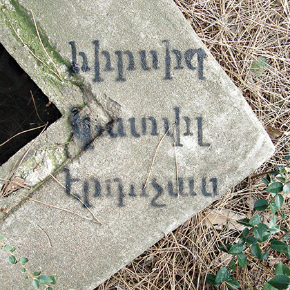

Projects
About
Contact
Nikolay Alutin
independent curator and writer based in Moscow
Synthetic Types
Performance
Stedelijk Museum Amsterdam, 2019
Landscape with Bear
Exhibition
De Appel Amsterdam, 2019
Survival Kit pt.2
Exhibition & Publication
Cultural Transit Foundation, 2017

Survival Kit pt.1
Exhibition
Space Debris Istanbul, 2017
Ohne prickelnd, sanft
Publication
2017
Inside Art
Exhibition
Pushkin State Museum of Fine Arts, 2016